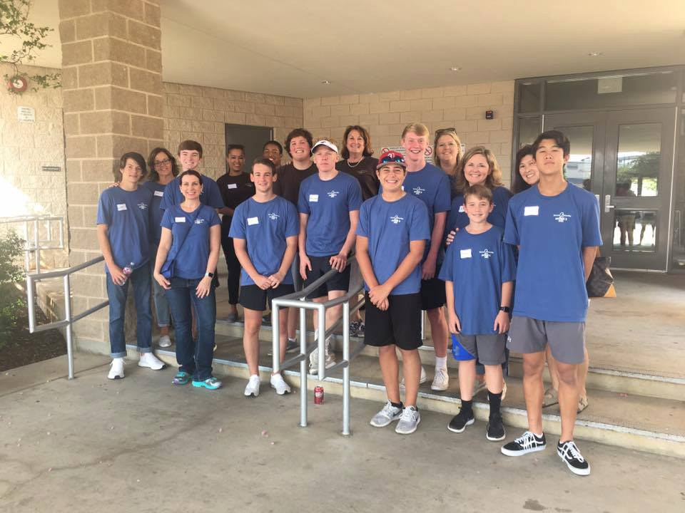
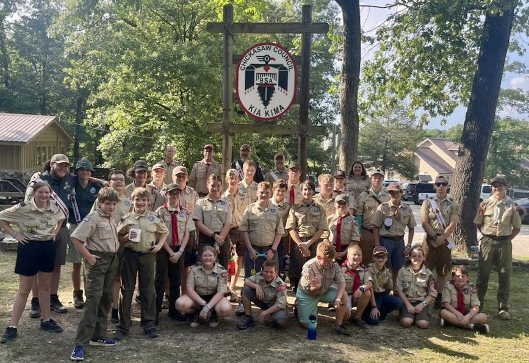
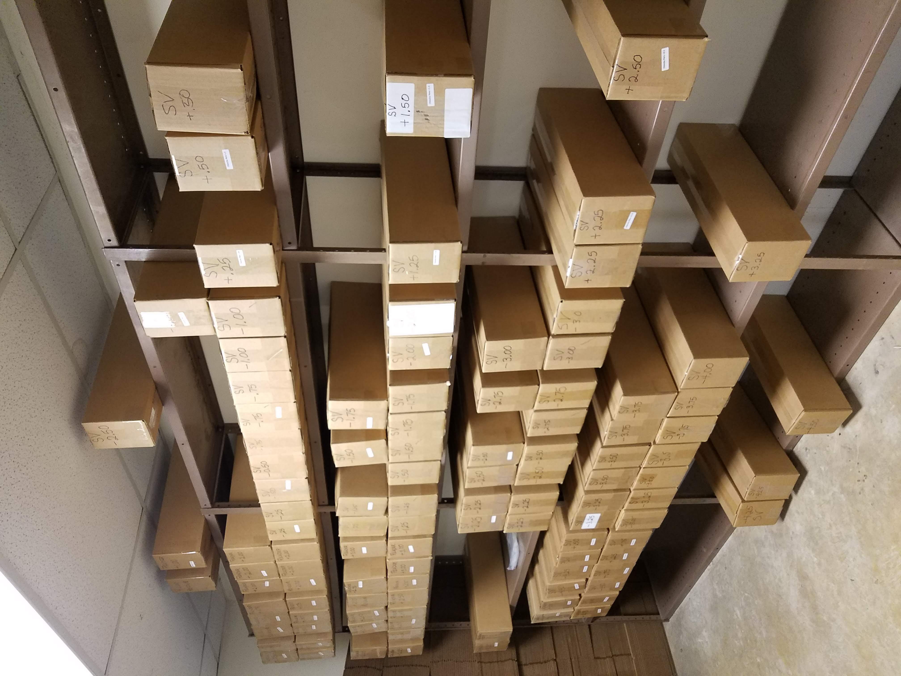
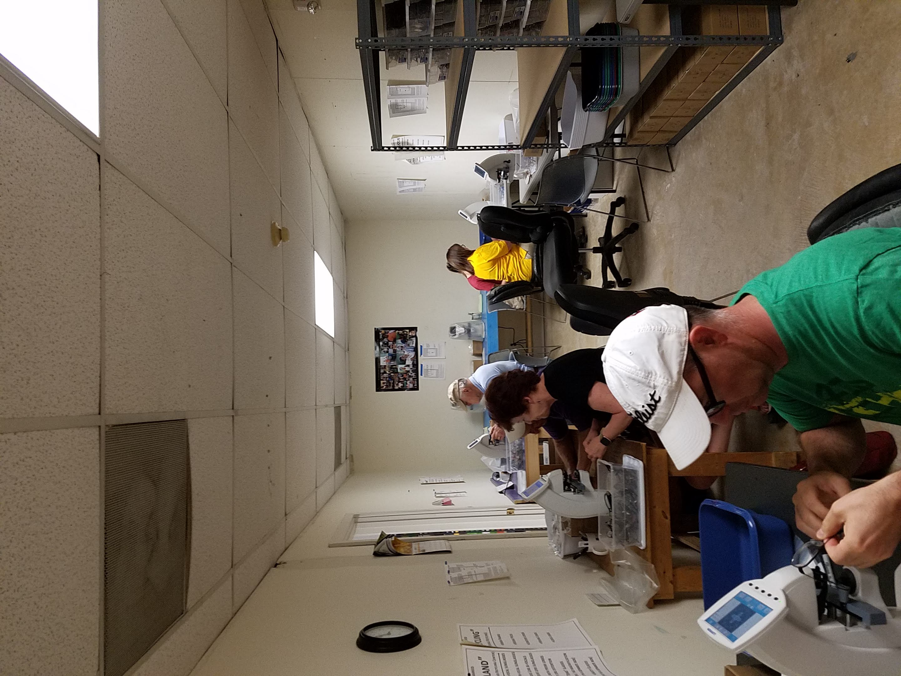
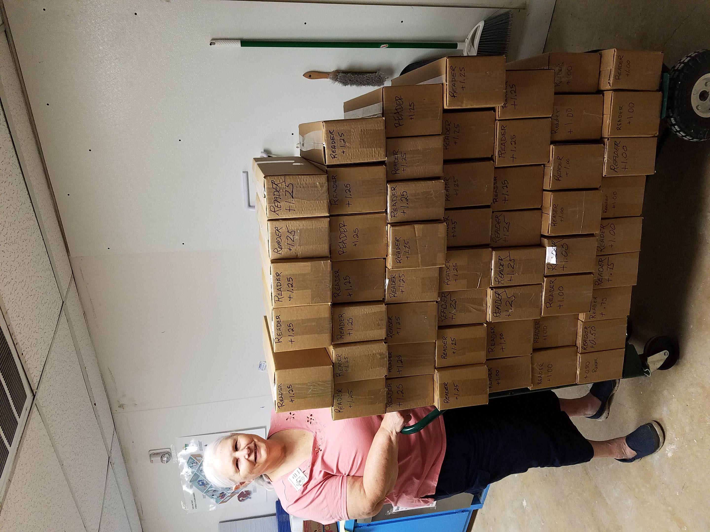
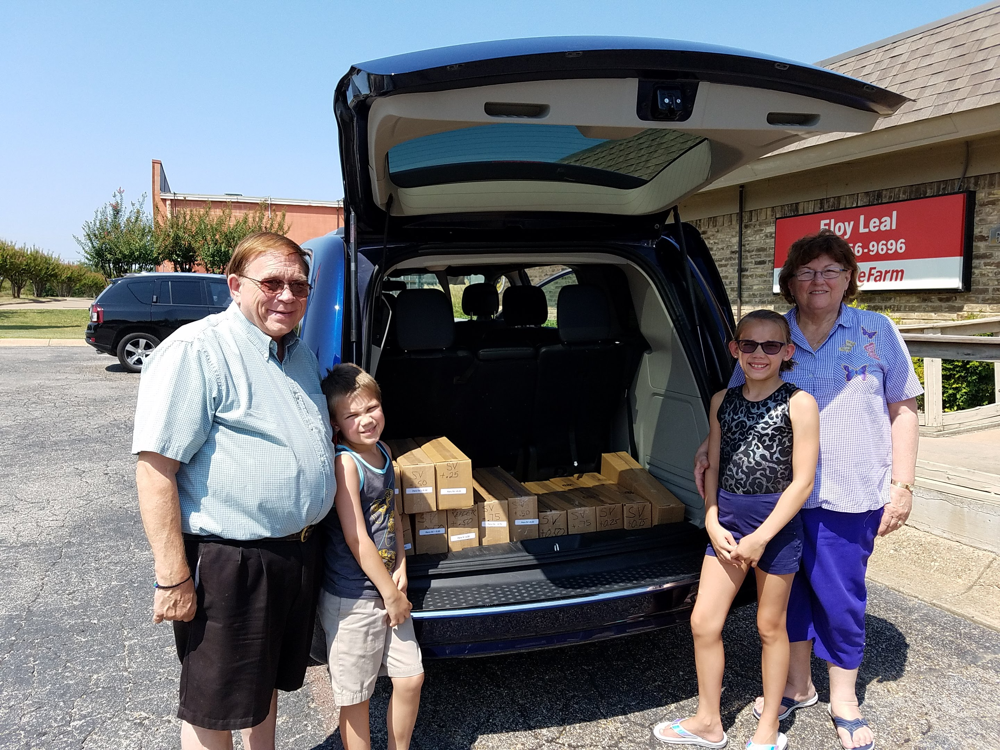

Giving used eyeglasses a second life. Restoring clear vision worldwide.
In our North Texas center, volunteers inspect, sanitize, and read the exact optical prescriptions of donated eyeglasses on manual lensometers. We prepare hundreds of thousands of pairs each year for optical missions across 80+ nations.
Drag the lens dial above to experience how a recycled pair brings clear sight into focus.
The Four-Step Optical Lifecycle
From an unused pair tucked away in a drawer to a child reading a textbook in a mountain village, each pair undergoes rigorous care by volunteer hands.
Collection & Retrieval
Donated glasses are gathered from over 215 drop-off boxes located in libraries, optical clinics, city halls, and Lions clubs throughout Dallas-Fort Worth.
Sorting & Ultrasonic Cleaning
Volunteers sort frames, inspect structural hinges, replace missing screws, and clean the frames and optics thoroughly in warm ultrasonic detergent baths.
Lensometer Neutralization
Using optical lensometers, trained volunteers measure the exact spherical and cylindrical prescription power, neutralizing and stamping each lens with precision.
Packaging & Mission Dispatch
Prescription glasses are bagged, cataloged by optical power, and boxed for medical missionary doctors heading to Peru, Mexico, Panama, and clinics worldwide.
215 Convenient Donation Points Across DFW
Bring your used eyeglasses, reading glasses, sunglasses, and frames to any of our partner collection boxes across the Metroplex.
Loading drop-off partners...
Upcoming Volunteer Workdays
No optical experience needed! We train every volunteer on sorting, sanitizing, or operating lensometers. Families, scouts, students, and clubs are welcome.
Loading upcoming sessions...
Sight Delivered Across the Continents
Archival photos of refurbished eyeglasses arriving on mission trips in Mexico, Panama, Peru, and local Texas vision screenings.






Board of Directors & Officers
The dedicated Lions and community leaders directing center operations and mission distributions.
Get in Touch With the Center
Have a large batch of glasses from an optometrist office? Need glasses for an upcoming medical mission? We are here to help.
Physical Center Location
5621 Bunker Blvd, Watauga, TX 76148
Mailing Address
P.O. Box 1854, Keller, TX 76244